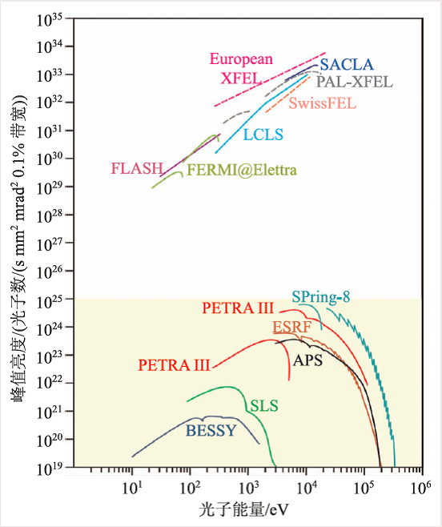

发布时间:2017-04-18 文章作者:网络 已阅读: 次
导读： 自2009 年美国直线加速器相干光源(LCLS)装置的成功出光起，X射线自由电子激光的研究与应用已逐渐步入了一个新的阶段。在LCLS上获得的初期结果令全世界科学家为之惊叹。
自2009 年美国直线加速器相干光源(LCLS)装置的成功出光起，X射线自由电子激光的研究与应用已逐渐步入了一个新的阶段。在LCLS上获得的初期结果令全世界科学家为之惊叹。
新的实验工具与实验技术总能为科学家们打开探索未知领域的新窗口，验证人们理论上的预言。X射线成像是一种独特而不可替代的技术。这一方面是由于X射线在固体中强大的穿透力，另一方面在于X射线的波长短到可以直接用于解析物质的原子结构。这些特性使得科学家可以推动基础物理科学的发展，将X射线结构成像应用到从新药物研发到飞机发动机叶片分析的广阔领域。
美国直线加速器相干光源(LCLS)的成功极大地推动了世界范围内基于加速器的X射线自由电子激光(XFEL)的发展。这种新型X射线光源为科学家们带来了前所未有的机遇与挑战。XFEL能够产生比第三代同步辐射光源亮度高十亿倍、脉冲短一万倍、峰值强度高达1020W/cm2的相干X 光。为充分利用XFEL 这些优异特性，迫切需要发展新的研究方法。
1 X射线自由电子激光
在过去的几十年间，第三代同步辐射光源装置一直是产生高强度X射线的最佳选择。目前国际上有几十台同步辐射光源正在运行，为数万名科学家服务。然而同步辐射并非激光，不具备相干性；若要产生激光，则需要电子聚集在间隔为辐射波长的相位上，这样当它们通过波荡器就能产生相干X射线。1971年，John Madey发现在波荡器中运动的相对论性自由电子能与光相互作用从而产生相干辐射放大，自由电子激光(FEL)也因此得名。
在FEL 概念提出之后的20 年中，人们分别在远红外、近红外和可见光波段建成了FEL 装置。这些典型的FEL 都是基于直线加速器提供的相对论电子束通过优化的波荡器和谐振腔系统来实现的。然而，因为缺少适合短波长的光学谐振腔反射镜材料，限制了自由电子激光推向X 射线波段。后来人们发现，作为增益介质的电子束有一个独特的性质，即当其以接近光速沿自发辐射的方向运动时，电子束能与自发辐射持续耦合，并在一定条件下使电子束产生微聚束，微聚束又反过来加强自发辐射，从而建立一个正反馈放大机制直到饱和。这种产生FEL 的方式被称为自放大自发辐射(SASE)，而基于SASE 机制的FEL 是没有输出波长限制的。
在SASE-FEL 中，辐射光强在波荡器中呈指数增益。当达到饱和时，每个电子平均可以发射出103—104个X射线光子。考虑到一个电子束团中一般有109—1010个电子，这就意味着每个SASE 输出脉冲中大概有1012—1014个光子。图1 给出了国际上一些主要的XFEL 和第三代同步辐射光源亮度的比较。
自上世纪90 年代科学家提出利用斯坦福直线加速器产生X射线激光起，美国和欧洲的几个实验室先后开展了一系列原理验证及关键技术研究，直到2005 年，德国FLASH装置在极紫外到软X射线波段的FEL 出光并开始用户实验，成为世界首台SASE FEL 用户装置。2009 年，美国SLAC 的LCLS 装置的顺利出光，标志着硬XFEL 时代的到来。目前LCLS 已经可以产生覆盖280 eV 到10 keV 的XFEL，辐射脉冲长度可以在2—4 fs～500 fs之间调节，辐射脉冲能量可超过3 mJ。日本的SACLA，意大利的FERMI@Elettra 也先后出光，目前正在建设的XFEL 还有德国的FLASH-II，韩国的PAL-XFEL，欧洲的European XFEL，以及瑞士的SwissFEL。
2 X射线自由电子激光的科学应用
利用SASE-FEL，科学家们可以研究同步辐射光源无法研究的时间和强度区域中的X 射线与物质的相互作用。与同步辐射光源用户类似，起初的用户大多来自于物理学领域，尔后分子生物学科学家才成为重要的用户。本文将重点强调XFEL 在物理研究中的应用。
XFEL 的科学应用将解答下述问题：化学键断裂过程中原子是如何运动的？光致原子运动或者辐射损伤的反应通道是什么？这些原子运动规律是所有化学反应的基础。原子核运动的时间尺度为飞秒级，价电子运动的时间尺度为百阿秒级，而内层电子的运动会更快。XFEL 提供的超短脉冲和超高强度特性为原子尺度空间分辨的分子结构动力学研究提供了强有力的工具。
2.1 空心原子与分子爆炸
原子、分子或团簇体系吸收超强、超快XFEL 将产生一些极端条件下的奇异物态。在LCLS 上开展的首批实验的目的就在于观测一些轻原子、分子体系在强场电离过程中的行为。
实验表明，聚焦的X射线激光能将Ne 原子外的所有10 个电子依次剥离：内层电子优先吸收一个光子而被电离，内层空穴被随后的俄歇过程填补，直到所有电子被剥离。相反，N2分子吸收X射线光子后将失去两个1s 电子而形成双内层空穴，超短XFEL 脉冲将减慢电离过程，抑制原子外围电子的完全剥离。这个发现的重要意义在于，XFEL 的超短脉冲特性将能减小对生物样品的辐射损伤，从而为散射成像提供可能。为了进一步研究辐射损伤的机理，利用XFEL 还开展了对C60 分子的实验和理论模型研究。
2.2 泵浦—探针实验
化学反应过程中的能流与电荷输运决定于原子核与电子的位置与运动行为，泵浦—探针谱学是研究上述过程的重要实验方法。LCLS上最近的一个实验是，一束短脉冲近红外激光使CH3-I 化学键断裂，利用精确延时的超强XFEL脉冲观测在断裂过程中相互远离的碎片的电荷与动能，可以提供电荷输运在时间分辨和键长尺度分辨的重要信息。对于复杂分子，电荷输运过程将涉及多个原子和多个化学键，时间分辨的瞬态俄歇电子谱能提供上述过程的快速拍照信息。
2.3 关联体系动力学
超导与超流态是凝聚态物理学的一个研究热点，XFEL 可以帮助实现超导与超流态相变过程的飞秒级时间分辨的动力学研究。微米尺度的He-4 液滴被注入到真空，并迅速被蒸发至临界温度，通过X射线相干衍射成像提供的100 nm的空间分辨，观测到液滴在相变过程中的外部形貌变化以及从涡流到常规晶格的重整过程。实验发现，旋转速度可以超过旋转液氦的经典温度极限；涡流密度比以往任何超流系统大5 个量级。这些发现都是未预料到的，加深了对量子集体行为的理解。
3 X射线自由电子激光的光明未来
目前在运行的几台XFEL 装置已经取得了巨大的成功。人们还在积极拓展XFEL 的能力和应用范围，例如，产生阿秒级的超短脉冲，光子能量超过50 keV，脉冲重复频率达到1 MHz等。美国第二台XFEL，LCLS-II，几年之后将能提供脉冲重复频率为100 kHz 的X 射线FEL光束。另外，近年来激光等离子体尾场加速和介质激光加速等新技术发展迅猛。基于这些新技术，有望大大减小XFEL 装置的规模和造价，使其在大学实验室、医院甚至商业应用成为可能。
与此同时，XFEL 的科学应用将帮助我们进一步理解光与物质的相互作用，探索物理、化学和生命科学中一些纷繁复杂现象背后的本质。XFEL 的短波长和超快特性将成为研究纳米结构和动力学不可或缺的重要工具。

图1 国际上一些主要XFEL(上方的无阴影部分)与第三代同步辐射光源(下方的有阴影部分)的峰值亮度比较。XFEL的峰值亮度比第三代同步辐射光源高10 个量级左右(其中实线为已出光的光源，虚线为正在设计和建造中的光源)
 当前位置：
当前位置：